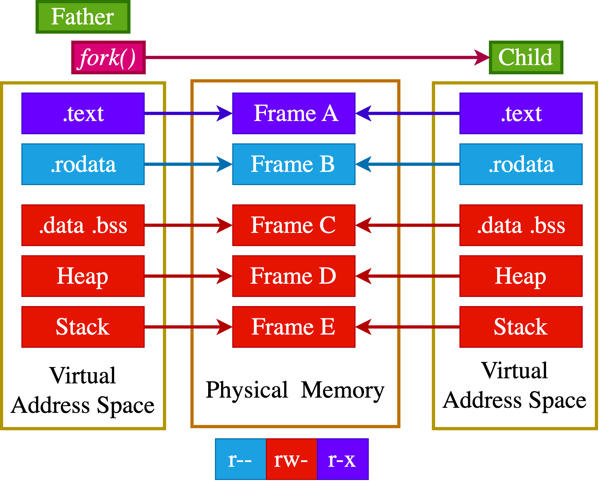
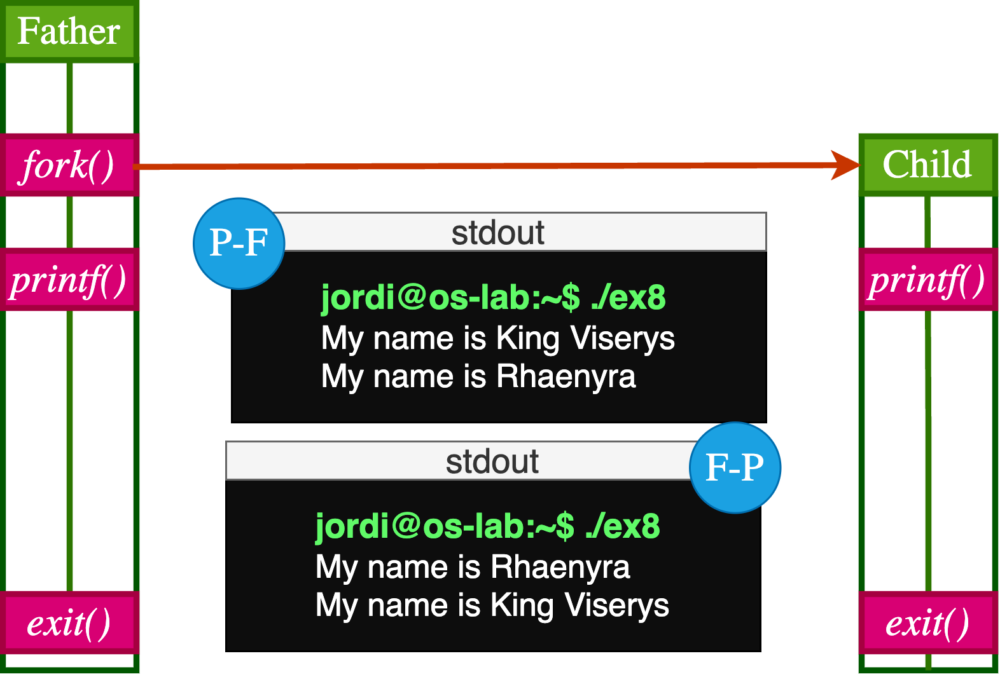
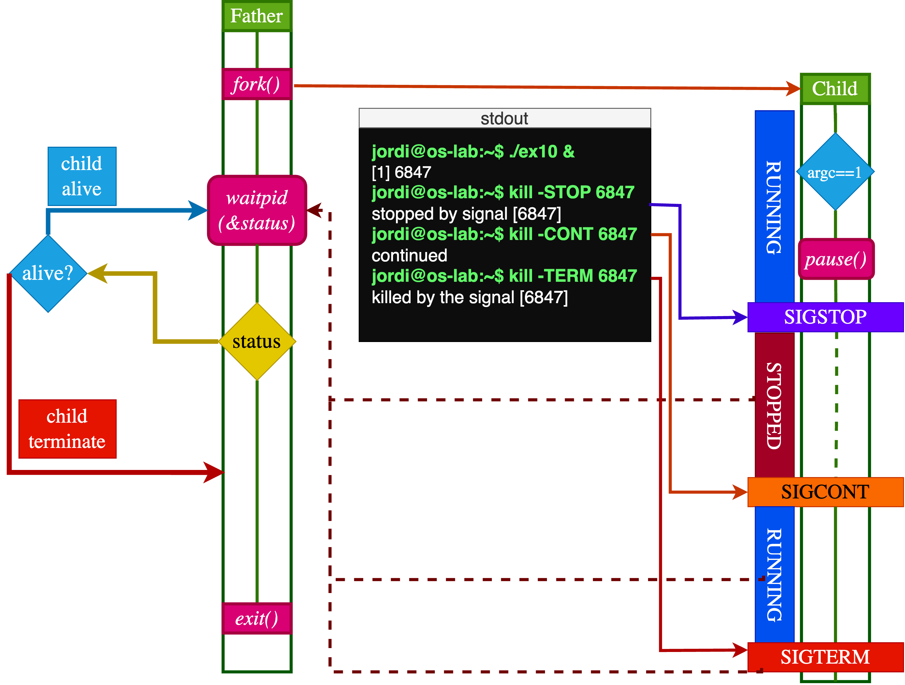
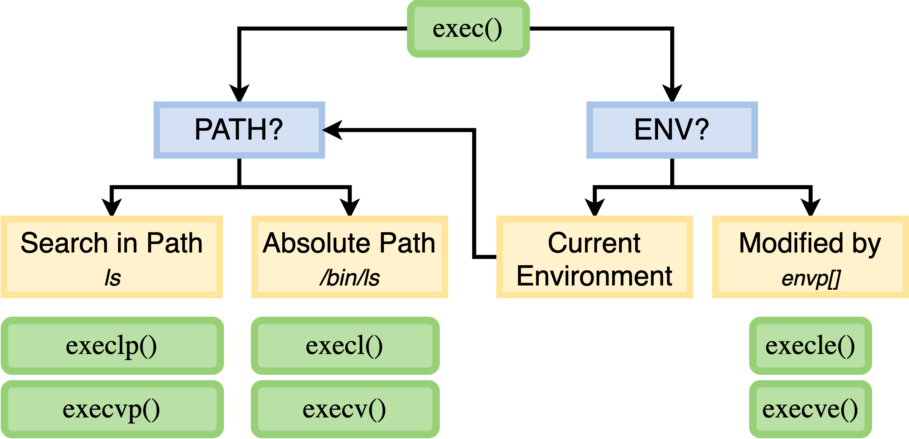

sequenceDiagram
participant P as Pare
participant K as Kernel
participant C as Fill
Note over P: Estat abans de fork()<br>RAX = ?, PC = adreça_crida_fork
P->>K: `fork()`
activate K
K-->>P: Retorn al Pare:<br>RAX = Child PID <br>PC = adreça_següent_instrucció
K-->>C: Retorn al Fill:<br>RAX = 0<br>PC = adreça_següent_instrucció
deactivate K
par Execució paral·lela des del mateix punt
P-->>P: Pare: Continua l'execució.(`if (RAX > 0)`)
C-->>C: Fill: Continua l'execució.(`if (RAX == 0)`)
end
Note over P,C: Ambdós processos s'executen de manera independent
Creació de Processos a Linux
Unitat 3 · Sistemes Operatius (SO)
Jordi Mateo Fornés
Mecanisme de Creació fork()
fork() crea una còpia exacta del procés actual (el pare). Aquesta còpia esdevé el procés fill i s’executa independentment i simultàniament.
Espai de Memòria
Els processos pare (A) i fill (B) no comparteixen espai de memòria. Cada procés té el seu propi espai d’adreces virtuals. No obstant això, el contingut inicial de la memòria del procés pare es copia a l’espai d’adreces del fill.

Jerarquia de Processos · fork()
ex1.c
Terminal A
Terminal B
Execució Independent:fork()
Valors de retorn: fork()
- Si
fork()té èxit:- Retorna un valor \(>0\) al procés pare (el PID del procés fill).
- Retorna 0 al procés fill.
Consideracions
- Si
fork()falla en el procés pare, retorna un valor \(<0\) i el codi d’error es guarda a la variable errno. - Si
fork()falla, no es crea cap procés fill.
Observacions
- La instrucció
exit(0)s’executa tant pel procés pare com pel fill. - Cada procés executa el seu propi
printfde manera independent.
Registres i fork()
sequenceDiagram
participant P as Pare
participant K as Kernel
Note over P: Estat abans de fork()<br>RAX = ?, PC = adreça_crida_fork
P->>K: `fork()`
activate K
alt Error a `fork()`
P--xK: Retorna al pare:<br>RAX = -1
Note over P: `errno` s'estableix.
end
Observació
A l’arquitectura x86, el registre RAX s’utilitza per emmagatzemar el valor de retorn de la crida al sistema fork(). En altres arquitectures, s’utilitzen registres equivalents (sovint R0 o X0).
Gestió d’errors: fork()
| Error | Descripció | Raons |
|---|---|---|
| EAGAIN | S’han assolit els límits del sistema. | - Límits de processos (RLIMIT_NPROC) - Límits de fils (threads-max) - Esgotament dels PIDs disponibles (pid_max) - Límits de cgroup |
| ENOMEM | Memòria del Kernel insuficient. | - Escassetat de RAM o Swap - Problemes amb els espais de noms PID |
| ENOSYS | fork() no és compatible. |
- Maquinari sense unitat de gestió de memòria (MMU) - SO no compatible amb fork() |
| ERESTARTNOINTR | Crida interrompuda i reiniciada. | Intern al Kernel, no és un error vist directament per l’aplicació. |
Forkbomb
Mecanismes de Protecció
El nucli implementa dos mecanismes per prevenir les forkbombs:
- Límits de processos per usuari: Cada usuari té un límit configurable sobre el nombre de processos que pot crear, establert per
ulimit -u. - Límit global de processos: El sistema té un límit global sobre el nombre total de processos que pot crear, configurat per
pid_max(típicament 32768).
sequenceDiagram
participant P as Procés Forkbomb
participant K as Nucli (Kernel)
P->>K: fork() (1r intent)
activate K
K-->>P: Retorna PID del fill1
deactivate K
par Creació Exponencial
P->>K: fork() (2n intent)
activate K
K-->>P: Retorna PID del fill2
deactivate K
fork1->>K: fork() (1r fill)
activate K
K-->>fork1: Retorna PID del fill3
deactivate K
end
Note over K: Processos creats: 4
loop Fase de Saturació
P/fills->>K: fork() (Nou intent)
activate K
alt Abans del límit
K-->>P/fills: Retorna nou PID
else Després del límit
K-->>P/fills: Retorna -1 (EAGAIN)
end
deactivate K
end
Note over K: Estat Final:<br>- Límit de processos assolit<br>- CPU al 100%<br>- Nous forks bloquejats.
Gestió de Memòria · fork()

Observacions
- En el moment de
fork()\(\rightarrow\) El pare i el fill comparteixen el mateix espai d’adreces físic. - Cada procés té el seu propi espai d’adreces virtual, que tradueix a l’espai d’adreces físic compartit.
Duplicats idèntics
Inicialment, el pare i el fill són duplicats idèntics. A partir d’aquest moment, cada procés té el seu propi espai d’adreces virtual, i qualsevol modificació en un no afecta l’altre.
Duplicació \(\rightarrow\) Independència
static int i = 11; //.data
int main() {
int j= 22; // Stack
int *z = malloc(sizeof(int)); // Heap
pid_t pid;
switch (pid=fork())
{
case 0:
i *= 3;
j *= 3;
*z=44;
break;
default:
sleep(3);
*z=55;
break;
}
printf("PID=%ld %s data=%d stack=%d heap=%d\n",
(long) getpid(),
(pid == 0) ? "(child) " : "(parent)",i,j,*z);
free(z);
exit(0);
}sequenceDiagram
participant P as Pare
participant OS as Kernel
participant C as Fill
Note over P: i=11, j=22, z=NULL
P->>OS: `fork()`
par
C->>OS: i *= 3 (.data) [i es converteix en 33]
activate OS
OS-->>C: Duplica Pàgina, Actualitza VMA
deactivate OS
C->>OS: j *= 3 (stack) [j es converteix en 66]
activate OS
OS-->>C: Duplica Pàgina, Actualitza VMA
deactivate OS
C->>OS: *z = 44 (heap) [z apunta a 44]
activate OS
OS-->>C: Duplica Pàgina, Actualitza VMA
deactivate OS
end
P->>OS: *z = 55 (heap) [z apunta a 55]
activate OS
OS-->>P: Duplica Pàgina, Actualitza VMA
deactivate OS
C->>C: Prints: data=33 stack=66 heap=44
P->>P: Prints: data=11 stack=22 heap=55
Copy-On-Write (CoW)
sequenceDiagram
participant P as Pare
participant M as Memòria
participant C as Fill
P->>C: Crea Procés Fill
M->>C: Comparteix Pàgina X
rect rgba(255, 200, 200, 0.2)
Note over P,C: Post-fork - Operació escriptura
P->>M: Modifica Pàgina X
M->>P: Crea còpia privada X' (RW)
M->>C: Manté original X (RO)
end
Com funciona?
Quan fork() crea un nou procés, el pare i el fill inicialment comparteixen les mateixes pàgines de memòria. Aquestes es marquen com a només lectura per a ambdós processos.
- Crea una còpia privada d’aquella pàgina per al procés que escriu.
- Assigna la nova pàgina amb permisos d’escriptura.
- Manté la transparència per a l’aplicació.
Aquest mecanisme optimitza tant el temps com la memòria, ja que només es copia la informació modificada.
fork() or clone()
Exercicis
- Investiga les simplificacions que
fork()fa sobreclone(). - Adapta el codi per utilitzar
clone()directament.
Observacions
- Absència de
fork()en strace:- No hi ha una invocació directa a la crida al sistema
fork(). - En canvi, es detecta una crida a
clone(), que és la crida al sistema principal del nucli de Linux per crear tant processos com fils.
- No hi ha una invocació directa a la crida al sistema
- Relació entre
fork()iclone():- La funció
fork(), definida a la biblioteca estàndard de C (glibc), actua com un embolcall que crida internament aclone()amb un conjunt de paràmetres predeterminats.
- La funció
clone()i els seus flags:- SIGCHLD: Configura el mecanisme de notificació per al procés pare.
- CLONE_CHILD_SETTID: Estableix l’identificador de fil (TID) al procés fill.
- CLONE_CHILD_CLEARTID: Neteja automàticament aquest identificador en finalitzar.
Indeterminisme fork()

Observacions
- La execució del programa és no determinista.
- El procés pare i el fill poden executar-se en qualsevol ordre.
- L’planificador del sistema operatiu decideix quin procés s’executa en un moment donat.
wait()
wait()
La crida al sistema wait() permet que un procés pare bloquegi la seva execució fins que un dels seus processos fills canviï d’estat (normalment, quan finalitza). També recupera informació sobre el fill que ha canviat d’estat.
Propietats
- Retorna el PID del procés fill que ha canviat d’estat, o -1 en cas d’error.
- Si
wstatusno és NULL, l’estat de sortida del fill s’hi emmagatzema.
SIGCHLD
El senyal SIGCHLD s’envia al procés pare quan un fill canvia d’estat.
sequenceDiagram
participant P as Pare
participant K as Kernel
participant C as Fill
P->>K: fork()
K-->>C: Crea Procés Fill
activate C
K-->>P: Retorna PID del Fill
C->>C: Execució del Fill
P->>K: wait()
K->>K: Bloqueja pare fins que el fill canviï d'estat
C->>K: exit(42)
deactivate C
K->>K: PCB retingut
K-->>P: notificació SIGCHLD
P->>K: Llegeix estat del Fill Reads
K->>K: Allibera PCB fill
K-->>P: Retorna estat (42)
Example: wait()
Observacions
- El procés pare utilitza
wait()per esperar que el seu fill finalitzi abans de continuar. Això assegura que la sortida serà sempre My name is King Viserys després de My name is Rhaenyra. - No garanteix que el fill s’executi primer. Només assegura que el fill acabi abans que el pare reprengui la seva execució.
wait()és per a un pare que espera un fill. Un fill no pot utilitzar-lo per esperar el seu pare.- Altres mecanismes, com
pause()i senyals, són necessaris per a diferents escenaris de sincronització.
sequenceDiagram
participant P as Pare (PID X)
participant K as Kernel
participant C as Fill (PID Y)
P->>K: fork()
K-->>C: Crea Procés
K-->>P: Retorna PID Y
K-->>C: Returns 0
P->>K: wait()
Note right of P: Estat: WAITING
K->>K: Planificador: continua Fill
activate C
C->>C: printf("My name is Rhaenyra")
C->>K: exit(0)
deactivate C
K-->>P: SIGCHLD + status (0)
Note right of P: Estat: RUNNING
P->>P: printf("My name is King Viserys")
P->>K: exit(0)
waitpid()
Options
WNOHANG: No bloquejar si cap procés fill ha canviat d’estat. Això significa que la crida retorna immediatament.WUNTRACED: També retorna per processos fills que han estat aturats (per exemple, per un senyal).WCONTINUED: També retorna per processos fills que han estat reprès després d’haver estat aturat (disponible des de Linux 2.6.10).
Valors de pid
- \(\lt -1\): Espera qualsevol procés fill el PID del qual sigui igual al valor absolut de pid.
- \(= -1\): Espera qualsevol procés fill.
- \(= 0\): Espera qualsevol procés fill el PID del qual sigui igual al del procés que crida (el pare).
- \(\gt 0\): Espera el procés fill específic identificat per aquest valor de pid.
Observació
wait(NULL) és equivalent a waitpid(-1, NULL, 0)
Example: waitpid()
int main() {
printf("Dracarys!\n");
pid_t drogon = fork();
if (drogon == 0) {
sleep(1);
printf("Fire and blood in KL!\n");
exit(0);
}
pid_t rhaegal = fork();
if (rhaegal == 0) {
sleep(3);
printf("Flying over Saltspear\n");
exit(0);
}
waitpid(rhaegal, NULL, 0);
printf("Rhaegal has returned\n");
waitpid(drogon, NULL, 0);
printf("Drogon has returned\n");
exit(0);
}sequenceDiagram
participant D as Daenerys
participant K as Kernel
participant D1 as Drogon
participant D2 as Rhaegal
Note over D: dracarys!
D->>K: fork() (Drogon)
activate D1
D->>K: fork() (Rhaegal)
activate D2
Note over D1: sleep(1)
D1->>D1: printf("Fire and blood in KL!")
D1->>K: exit(0)
deactivate D1
Note over D2: sleep(3)
D2->>D2: printf("Flying over Saltspear")
D2->>K: exit(0)
deactivate D2
D->>K: waitpid(Rhaegal)
K-->>D: Returns Rhaegal's PID (Rhaegal finished)
D->>D: printf("Rhaegal has returned")
D->>K: waitpid(Drogon)
K-->>D: Returns Drogon's PID (Drogon finished)
D->>D: printf("Drogon has returned")
D->>K: exit(0)
wait()/waitpid(): Macros
El paràmetre status de wait() o waitpid() és un enter (int) que conté informació codificada sobre com ha finalitzat (o ha canviat d’estat) el procés fill.
x86
| Bits | Camp | Descripció |
|---|---|---|
| 0-6 | Codi de Senyal | El número del senyal que ha causat la terminació del fill, si n’hi ha. (WTERMSIG(status)). |
| 7 | Indicador de Core Dump | Indicador si s’ha generat un core dump. (WCOREDUMP(status)). |
| 8-15 | Exit | El valor de retorn de l’exit() del fill. (WEXITSTATUS(status)) |
| 16-31 | - | Generalment no utilitzat o reservat. |
Què passa amb exit(256)?
El número 256 es converteix en un codi de sortida de 0 perquè els codis de sortida solen estar limitats a 8 bits (0-255). Això es deu al fet que el sistema operatiu només utilitza els 8 bits menys significatius per al codi de sortida. Per tant, WEXITSTATUS(status) retornarà 0.
wait()/waitpid(): Status Macros (I)
WIFEXITED(status): Retorna cert (no zero) si el procés fill ha finalitzat normalment mitjançantexit().WEXITSTATUS(status): Retorna el codi de sortida del fill. Només vàlid siWIFEXITED(status)és cert.WIFSIGNALED(status): Retorna cert si el canvi d’estat del fill ha estat causat per un senyal.WTERMSIG(status): Retorna el número del senyal que ha causat la terminació del procés fill. Només vàlid siWIFSIGNALED(status)és cert.
wait()/waitpid(): Status Macros (II)
WCOREDUMP(status): Retorna cert si el fill ha terminat i ha generat un core dump. Només vàlid siWIFSIGNALED(status)és cert. (La disponibilitat pot variar).WIFSTOPPED(status): Retorna cert si el fill ha estat suspès (aturat) per un senyal. Per detectar això,waitpid()ha de ser cridat amb l’opcióWUNTRACED.WSTOPSIG(status): Retorna el número del senyal que ha aturat el fill. Només vàlid siWIFSTOPPED(status)és cert.WIFCONTINUED(status): Retorna cert si un fill que havia estat aturat ha estat reactivat (ambSIGCONT). Requereix l’opcióWCONTINUEDenwaitpid()(Linux kernel 2.6 i posteriors).
Exemple: waitpid() & Macros
int main(int argc, char *argv[]){
pid_t pid, w; int status;
pid = fork();
if (pid == 0) {
if (argc == 1) pause(); exit(atoi(argv[1]));
} else {
do {
w = waitpid(pid, &status, WUNTRACED | WCONTINUED);
if (w == -1) {
perror("waitpid"); exit(EXIT_FAILURE);
}
if (WIFEXITED(status)) {
printf("exited, [%d] status=%d\n",
pid, WEXITSTATUS(status));
} else if (WIFSIGNALED(status)) {
printf("killed by signal,
[%d] -> %d\n", pid, WTERMSIG(status));
} else if (WIFSTOPPED(status)) {
printf("stopped by signal [%d]
-> %d\n", pid, WSTOPSIG(status));
} else if (WIFCONTINUED(status)) {
printf("continued\n"); }
} while (!WIFEXITED(status) && !WIFSIGNALED(status));
exit(0);
}
Pregunta?
Quin serà el resultat després d’executar ./ex8 42?
Estat Zombie
TASK_ZOMBIE
Després d’executar exit(), un procés no s’elimina immediatament. En lloc d’això, entra en l’estat zombie fins que el seu procés pare processa la notificació SIGCHLD o crida a wait() o waitpid(). Si el pare no ho fa, el fill roman en aquest estat indefinidament.
Orfes (I)
Un procés fill esdevé un orfe si el seu pare mor abans que ell. En aquest cas, el nucli reassigna el fill al procés init (PID 1), que és responsable de netejar els processos orfes.
sequenceDiagram
participant Pare
participant Kernel
participant Fill
participant Init
Parent->>Kernel: exit() // Mor el pare
Kernel->>Kernel: find_zombie_children()
Note right of Child: Orfe, fill sense pare
Kernel->>Child: reparent_to_init()
loop Cada 0.5s
Init->>Kernel: wait()
Kernel->>Init: Retorna estat
Kernel->>Child: release_task()
end
Orfes i Zombies
| Escenari | Mecanisme del Nucli | Temps | Consequències |
|---|---|---|---|
| Pare Actiu | Reté task_struct fins a wait() |
Indefinit | - Consumeix entrada a la taula de processos - PID es manté ocupat |
| Pare Mort | reparent_to_init() (PPID←1) |
\(\le 1\) ms | - Init neteja en segon pla (init periodicament crida wait()) - Alliberació asíncrona |
| Reinici del Sistema | kill(pid, SIGKILL) |
0 | - Alliberació forçada (via do_exit() global) - Sense garantia d’estat |
| Pare ignora SIGCHLD | Zombie persistent | \(\infty\) | - Requereix intervenció manual |
Example: Factoria de Zombies
zombie.c
Transformació: exec()
Processos Independents?
Tots els processos (excepte PID 1) tenen un pare i es creen amb clone(). Però com poden bash i ls ser programes separats?
Syscall exec()
Permet transformar un procés fill en un nou programa. La família de funcions exec substitueix l’espai d’adreces del procés actual amb un nou programa carregat des d’un fitxer executable (normalment en format ELF).
| Component | Abans de exec() |
Després de exec() |
|---|---|---|
| Espai d’Adreces | Mapeig original | Nou mapeig ELF |
| Taula de Fitxers | Heretat | Heretat (excepte FD_CLOEXEC) |
| Registres CPU | Context original | EIP=punt d’entrada, ESP=pila |
| Senyals | Handlers personalitzats | Tots restablerts a SIG_DFL |
| Memòria Compartida | MAP_SHARED preservada |
MAP_PRIVATE eliminada |
sequenceDiagram
participant P as Original
participant K as Kernel
participant N as Nou
P->>K: execve("/bin/ls", ["ls","-l"], envp)
activate K
K->>K: Valida ELF (e_ident, permissions)
K->>K: flush_old_exec()
K->>K: free_pgtables()
K->>K: load_elf_binary()
Note over P,N: El PID no canvia: és el mateix procés a nivell de nucli
Note over K,N: Crear Nou Context
K->>N: Map .text (RX)
K->>N: Map .data/.bss (RW)
K->>N: setup_arg_pages(argv, envp) ⟶ stack
K->>N: setup_brk() ⟶ heap
K->>N: start_thread(entry_point) <br> PC/IP ← entry point of the ELF binary
deactivate K
Note over N: Nova execució de codi
N-->>K: Syscalls Futures
K-->>N: Returna
Note right of P: Els espai d'adreces original <br> s'ha destruït <br> `task_struct` és el mateix <br> però amb el nou codi carregat
Familia exec()

Valors de retorn
- Mai retorna en cas d’èxit (substitueix completament el procés).
- Retorna -1 només en cas d’error (s’estableix
errno).
execve()és la crida al sistema bàsica (les altres són embolcalls de glibc).- Gestiona correctament SUID/SGID.
Exemple: ls -la
sequenceDiagram
box rgb(240,240,240) Parent Process
participant P
end
box rgb(240,240,240) Kernel
participant K
end
box rgb(240,240,240) Child Process
participant F
end
P->>K: Calls `fork()`
activate K
K-->>F: Crea una nova còpia del procés (Fill, PID Y)<br> amb memòria idèntica (CoW)
K-->>P: Retorna PID Y al Pare
deactivate K
par Execució Concurrent
F->>K: Crida `execv("/bin/ls", ["ls","-la"], NULL)`
activate K
K->>K: Valida `/bin/ls` (permissos, format)
K->>K: Esborra tota la memòria del Fill (F)**
K->>K: Carrega `ls` a la memòria del Fill**<br> (codi, dades, nova pila)
K->>K: Reconfigura els registres de la CPU i el PC/IP<br> al punt d'entrada de `ls`
deactivate K
Note over K,F: Codi original Fill (PID Y) <br> ha estat reemplaçat per `/bin/ls`.
activate F
F->>F: Executa el programa `/bin/ls -la`<br>Genera la llista a `stdout`.
F->>K: `exit(0)` (Finalitza `/bin/ls`)
deactivate F
activate P
P->>K: `waitpid(PID Y, &status, WUNTRACED)`
deactivate P
end
K-->>P: Notifica al Pare que el fill (ara `ls`) ha acabat.
activate P
P->>K: `exit(0)` (Finalitza el Pare)
deactivate P
Exercicis proposats
Això és tot per avui
TAKE HOME MESSAGE
La creació i gestió de processos és fonamental en els sistemes operatius. Hem explorat com fork() crea nous processos, com exec() permet la transformació de processos, i com wait() i waitpid() gestionen la sincronització entre pares i fills. A més, hem vist com es gestionen els processos zombies i orfes, i la importància de les macros per interpretar els estats dels processos fills.


Unitat 3 · Sistemes Operatius (SO) 🏠